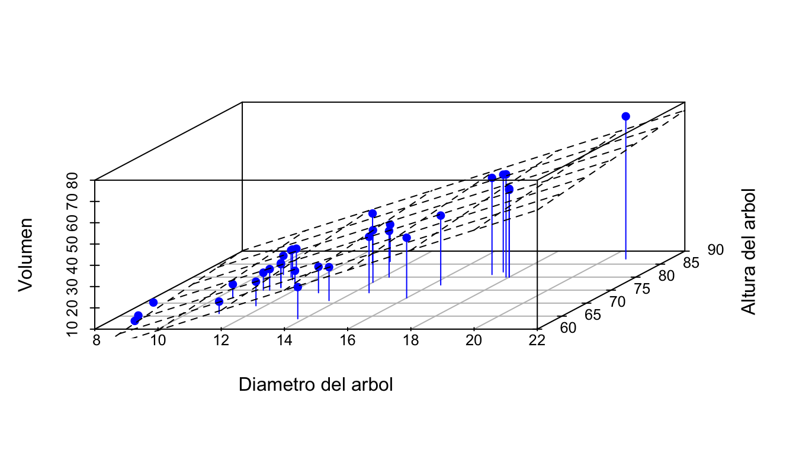

Capítulo 28 Modelo de regresión lineal múltiple
Antes de empezar, el siguiente tema “Regresión Lineal Múltiple”, queremos hacer referencia que fue obtenido de tesis: “Apoyo a la docencia” Omar (2019).
28.1 Introducción
El modelo de regresión lineal simple ajusta una variable explicativa a una variable respuesta; Por su parte, el Modelo de regresión lineal múltiple busca hallar el mejor ajuste con dos o más variables regresoras. Es decir, la variable respuesta \(\underline{Y}\) depende de \(k\) regresores de la forma:
\[ \underline{Y}=\beta_{0}+\beta_{1}x_{1}+\beta_{2}x_{2}+ \ldots +\beta_{k}x_{k}+\epsilon \]
En primera instancia no parece ser un gran cambio, sin embargo, es de gran importancia ya que de esta forma se puede estimar de una mejor manera un evento aleatorio, pues en general, un suceso no depende de sólo una acción o variable, sino que es resultado de una serie de diversos eventos o variables.
Es importante mencionar que en un modelo de regresión múltiple se deja de ajustar una línea recta a los datos, en cambio se ajusta un hiperplano.
data("trees")
library("scatterplot3d")
s3d <- scatterplot3d(trees, type = "h", color = "blue",
angle=55, pch = 16, xlab = "Diametro del arbol",ylab = "Altura del arbol", zlab="Volumen")
my.lm <- lm(trees$Volume ~ trees$Girth + trees$Height)
s3d$plane3d(my.lm)
El “scatterplot” de arriba, se realizó con la base precargada en \(R\), \("trees"\), los datos que componen la muestra se encuentran en un vector de dimensión 3, la cual busca relacionar la variable \(\underline{Y}\), con dos variables explicativas \(X_{1}\) y \(X_{2}\), en este caso, la variable \(\underline{Y}\) hace referencia al volumen de un árbol y la variable \(X_{1}\) hace referencia al diámetro del tronco del árbol y \(X_{2}\) denota la altura del árbol, se observa que existe una tendencia, la cual es representada mediante el hiperplano de regresión marcado, en la cual a menor diámetro y menor altura, el volumen del árbol tiende a disminuir.
Debido a que se trabaja con cierto error \(\epsilon\) en el ajuste de la regresión, es conveniente suponer que se cumplen lo siguientes supuestos:
Definición 3.1 (Supuestos del modelo de regresión múltiple)
El error \(\epsilon_{i}\) en el modelo de regresión lineal múltiple cumple:
\(\mathbf{E}[\epsilon_{i}]=0.\)
\(Var(\epsilon_{i})=\sigma^2.\)
\(Cov(\epsilon_{i},\epsilon_{j})=0, \ \ i \neq j \ \ \forall \ \ i= 1,2,\ldots,n; \ \ j= 1,2,\ldots,n.\)
Al cumplirse estos supuestos es posible calcular la esperanza y varianza de la variable respuesta \(\underline{Y}\) dado un conjunto de valores \(x_{1},x_{2},\ldots,x_{k}.\)
Teorema 3.1 Sea una variable de interés \(\underline{Y}\), llamada dependiente, relacionada con dos o más variables explicativas o también llamadas regresoras \(x_{1},x_{2},\ldots,x_{k}\), entonces:
a) \(\mathbf{E}[\underline{Y}]= \beta_{0}+\beta_{1}x_{1}+\beta_{2}x_{2}+ \ldots + \beta_{k}x_{k}.\)
b) \(Var(\underline{Y})= \sigma^2.\)
Demostración:
a) Para la esperanza de \(\underline{Y}\) se tiene:
\[\mathbf{E}[\underline{Y}]=\mathbf{E}[\beta_{0}+\beta_{1}x_{1}+\beta_{2}x_{2}+ \ldots +\beta_{k}x_{k}+\epsilon].\] La estimación es sobre \(\underline{Y},\) como \(\beta_{0},\beta_{1},\beta_{2},\ldots,\beta_{k}\) son constantes; \(x_{1},x_{2}, \ldots,x_{k}\) son los valores dados, por lo que:
\[\mathbf{E}[\underline{Y}]=\beta_{0}+\beta_{1}x_{1}+\beta_{2}x_{2}+ \ldots +\beta_{k}x_{k}+\mathbf{E}[\epsilon].\]
\[=\beta_{0}+\beta_{1}x_{1}+\beta_{2}x_{2}+ \ldots +\beta_{k}x_{k}+0\] \[\therefore \mathbf{E}[\underline{Y}]= \beta_{0}+\beta_{1}x_{1}+\beta_{2}x_{2}+ \ldots + \beta_{k}x_{k}. \blacksquare\]
b) Para la varianza de \(\underline{Y}\) se tiene:
\[Var(\underline{Y})=Var\left( \beta_{0}+\beta_{1}x_{1}+\beta_{2}x_{2}+ \ldots + \beta_{k}x_{k}+ \epsilon\right).\] La estimación es sobre \(\underline{Y}\), \(\beta_{0},\beta_{1},\beta_{2},\ldots,\beta_{k}\) son constantes; \(x_{1},x_{2},\ldots,x_{k}\) son valores dados, por lo que cumple que:
\[Var(\underline{Y})=0+0+0+\ldots+0+Var(\epsilon)\] \[\therefore Var(\underline{Y})=\sigma^2.\blacksquare\]
28.2 Modelo de regresión lineal múltiple
El objetivo del modelo de regresión lineal múltiple consiste en modelar \(\underline{Y}\) a través de \(k\) variables regresoras en \(n\) observaciones independientes. Es decir, se tiene el siguiente modelo:
\[ \begin{array}{ c c c c c c c c c c c c c } Y_{1} & = & \beta_{0} & + & \beta_{1}x_{11}& +& \beta_{2}x_{12} & +& \cdots & + & \beta_{k}x_{1k} & + & \epsilon_{1} \\ Y_{2} & = & \beta_{0} & + & \beta_{1}x_{21}& +& \beta_{2}x_{22} & +& \cdots & + & \beta_{k}x_{2k} & + & \epsilon_{2} \\ \vdots & & \vdots & & \vdots& & \vdots & & \vdots & & \vdots & & \vdots \\ Y_{n} & = & \beta_{0} & + & \beta_{1}x_{n1}& +& \beta_{2}x_{n2} & +& \cdots & + & \beta_{k}x_{nk} & + & \epsilon_{n} \\ \end{array} \]
El anterior conjunto de igualdades puede ser denotado matricialmente mediante la siguiente igualdad:
\[\underline{Y}=X\underline{\beta}+\underline{\epsilon}\]
donde: \[ \underline{Y}= \left( \begin{array}{c} y_{1} \\ y_{2} \\ \vdots \\ y_{n}\\ \end{array} \right),\ \ \ \ X= \left( \begin{array}{c c c c c} 1 & x_{11} & x_{12} & \ldots & x_{1k}\\ 1 & x_{21} & x_{22} & \ldots & x_{2k}\\ \vdots & \vdots & \vdots & \ddots & \vdots\\ 1 & x_{n1} & x_{n2} & \ldots & x_{nk}\\ \end{array} \right) \] \[ \underline{\beta}= \left( \begin{array}{c} \beta_{0} \\ \beta_{1} \\ \vdots \\ \beta_{k}\\ \end{array} \right),\ \ \ \ \epsilon= \left( \begin{array}{c} \epsilon_{1} \\ \epsilon_{2} \\ \vdots \\ \epsilon_{n}\\ \end{array} \right) \] Sustituyendo en la ecuación anterior, se observa que el modelo de regresión multiple puede ser visto como: \[ \left( \begin{array}{c} y_{1} \\ y_{2} \\ \vdots \\ y_{n}\\ \end{array} \right)= \left( \begin{array}{c c c c c} 1 & x_{11} & x_{12} & \ldots & x_{1k}\\ 1 & x_{21} & x_{22} & \ldots & x_{2k}\\ \vdots & \vdots & \vdots & \ddots & \vdots\\ 1 & x_{n1} & x_{n2} & \ldots & x_{nk}\\ \end{array} \right) \left( \begin{array}{c} \beta_{0} \\ \beta_{1} \\ \vdots \\ \beta_{k}\\ \end{array} \right) + \left( \begin{array}{c} \epsilon_{1} \\ \epsilon_{2} \\ \vdots \\ \epsilon_{n}\\ \end{array} \right) \]
La dimensión de las matrices señaladas anteriormente se mencionan en el siguiente recuadro:
\[ \begin{array}{|c|c|} \hline Matriz & Dimensión \\ \hline \underline{Y} & n \times 1 \\ X & n \times (k+1) \\ \underline{\epsilon} & n \times 1 \\ \underline{\beta} & (k+1) \times 1 \\ \hline \end{array} \]
Finalmente para definir correctamente el modelo es necesario realizar las siguientes suposiciones acerca de las matrices del modelo de regresión lineal múltiple.
Definición 3.2 Sea \(X\) la denominada \(matriz \ diseño\) entonces satisface que:
- \(X_{n \times (k+1)}\) es el rango completo en la columna, es decir, \(X\) es de rango \(k+1\)
Éste supuesto es importante ya que satisface que \(k+1\leq n\), es decir, el máximo número de variables con el que se ajusta el modelo no puede ser superior al número de observaciones.
De igual forma, observe que el supuesto de la varianza de los errores en la definición 3.1, puede reescribirse en forma matricial:
\[ Var(\epsilon)= \left( \begin{array}{c c c c c} Var(\epsilon_{1}) & Cov(\epsilon_{1},\epsilon_{2}) & Cov(\epsilon_{1},\epsilon_{3}) & \ldots & Cov(\epsilon_{1},\epsilon_{ n})\\ Cov(\epsilon_{2},\epsilon_{1})&Var(\epsilon_{2}) & Cov(\epsilon_{2},\epsilon_{3}) & \ldots &Cov(\epsilon_{2},\epsilon_{n}) \\ \vdots & \vdots & \vdots & \ddots & \vdots\\ Cov(\epsilon_{n},\epsilon_{1}) & Cov(\epsilon_{n},\epsilon_{2}) & Cov(\epsilon_{n},\epsilon_{3}) & \ldots & Var(\epsilon_{n})\\ \end{array} \right) \]
Por definición 3.1, \(Cov(\epsilon_{i},\epsilon_{j})=0 \ \ \ i\neq j\)
\[ Var(\epsilon)= \left( \begin{array}{c c c c c} Var(\epsilon_{1}) & 0 & 0 & \ldots & 0 \\ 0&Var(\epsilon_{2}) & 0 & \ldots & 0 \\ \vdots & \vdots & \vdots & \ddots & \vdots\\ 0 & 0 & 0 & \ldots & Var(\epsilon_{n})\\ \end{array} \right) \]
Por definición 3.1, \(Var(\epsilon_{i})=\sigma^2\)
\[ Var(\epsilon)= \left( \begin{array}{c c c c c} \sigma^2 & 0 & 0 & \ldots & 0 \\ 0&\sigma^2 & 0 & \ldots & 0 \\ \vdots & \vdots & \vdots & \ddots & \vdots\\ 0 & 0 & 0 & \ldots &\sigma^2 \\ \end{array} \right) \]
\(\therefore Var(\epsilon)=\sigma^2 I_{n \times n}. \blacksquare\)
28.3 Estimación por mínimos cuadrados de los parámetros del modelo
Es necesario dar una estimación de la intersección con el eje \(\underline{Y}\), las variables que conforman el hiperplano, es decir, \(\beta_{0},\beta_{1},\beta_{2},\ldots,\beta_{k}\) respectivamente. La manera en la que se construyen a los estimadores es tal que la diferencia entre todos los valores observados y los valores estimados sea 0, es decir, a éstas diferencias se le conoce como \(\mathbf{residuales}\), muchos autores también hacen referencia a ellos como \(\mathbf{residuos}\).
Definición 3.3 (Residuales). Sea \(y_{i}\) los valores observados, y sea \(\hat{y}_{i}\) los valores ajustados de la forma \(\hat{y}_{i}=\hat{\beta_{0}}+\hat{\beta_{1}}x_{1i}+\hat{\beta_{2}}x_{2i}+ \ldots +\hat{\beta_{k}}x_{ki}\) para \(\hat{\beta_{0}},\hat{\beta_{1}},\hat{\beta_{2}}, \ldots, \hat{\beta_{k}}\) dados, entonces:
\[e_{i}=y_{i}-\hat{y_{i}} \ \ \ \ \ \ i=1, \ldots,n.\] Se les conoce como residuales.
Para estimar los valores desconocidos \(\beta_{0},\beta_{1},\beta_{2},\ldots,\beta_{k}\) se usa el método de mínimos cuadrados, el cual es similar al caso de regresión lineal simple, dicho método propone minimizar la suma de cuadrados de los residuales.
Antes de continuar es necesario ver algunos resultados importantes de equivalencia y notación.
De la definición 3.3 se sabe que los valores esperados de \(y_{i}\) pueden ser definidos como:
\[ \begin{array}{c} \hat{y_{1}} \\ \hat{y_{2}} \\ \vdots \\ \hat{y_{n}}\\ \end{array} \begin{array}{c c c c c c c c c c} =&\hat{\beta_{0}}&+&\hat{\beta_{1}} x_{11} &+& \hat{\beta_{2}}x_{12}&+& \ldots &+&\hat{\beta_{k}} x_{1k}\\ =&\hat{\beta_{0}}&+&\hat{\beta_{1}} x_{21} &+& \hat{\beta_{2}}x_{22}&+& \ldots &+&\hat{\beta_{k}} x_{2k}\\ &\vdots && \vdots && \vdots && \vdots && \vdots\\ =&\hat{\beta_{0}}&+&\hat{\beta_{1}} x_{n1} &+& \hat{\beta_{2}}x_{n2}&+& \ldots &+&\hat{\beta_{k}} x_{nk}\\ \end{array} \]
La anterior ecuación puede ser descompuesta en forma matricial de la siguiente manera:
\[ \left( \begin{array}{c} \hat{y_{1}} \\ \hat{y_{2}} \\ \vdots \\ \hat{y_{n}}\\ \end{array} \right)= \left( \begin{array}{c c c c c} 1 & x_{11} & x_{12} & \ldots & x_{1k}\\ 1 & x_{21} & x_{22} & \ldots & x_{2k}\\ \vdots & \vdots & \vdots & \ddots & \vdots\\ 1 & x_{n1} & x_{n2} & \ldots & x_{nk}\\ \end{array} \right) \left( \begin{array}{c} \hat{\beta_{0}} \\ \hat{\beta_{1}} \\ \vdots \\ \hat{\beta_{k}}\\ \end{array} \right) \]
Por lo tanto, podemos renombrar a las matrices de acuerdo a los elementos que las conforman.
Se tiene la siguiente igualdad para los valores estimados \(\underline{\hat{Y}}.\)
\[\underline{\hat{Y}}=X \underline{\hat{\beta}}.\]
Ahora por la definición 3.3 y lo anterior tenemos que los residuales se encuentran de la forma:
\[\underline{e}=\underline{Y}-X \underline{\hat{\beta}}.\]
Teorema 3.2 (Mínimos Cuadrados).(MC) Si se minimiza la suma de cuadrados de la diferencia entre los valores observados y los estimados, la cual se expresa matricialmente de la siguiente forma:
\[\underline{e'}\underline{e}.\]
Entonces se tiene como estimador de \(\underline{\beta}\) a:
\[\underline{\hat{\beta}}=\left( X'X\right)^{-1}X'\underline{Y}.\]
Demostración:
Se sabe que los residuales están definidos como \(\underline{e}=\left( \underline{Y}-X \underline{\hat{\beta}}\right)\) de esta manera, por hipótesis se tiene:
\[\underline{e'}\underline{e}=\left( \underline{Y}-X \underline{\hat{\beta}}\right)'\left( \underline{Y}-X \underline{\hat{\beta}}\right)\] \[=\left(\underline{Y}'- \underline{\hat{\beta}}'X'\right)\left( \underline{Y}-X \underline{\hat{\beta}}\right)\] \[=\underline{Y}'Y-\underline{Y}'X\underline{\hat{\beta}}-\underline{\hat{\beta}}'X'\underline{Y}+\underline{\hat{\beta}}'X'X\underline{\hat{\beta}}\] \[\underline{e'}\underline{e}=\underline{Y}'Y-2\underline{Y}'X\underline{\hat{\beta}}+\underline{\hat{\beta}}'X'X\underline{\hat{\beta}}.\] Lo anterior se da ya que \(\underline{\hat{\beta}}'X'\underline{Y}\) es una matriz de \(1\times 1\), es decir, un escalar, y que su transpuesta \((\underline{\hat{\beta}}'X'\underline{Y})'=\underline{Y}'X\underline{\hat{\beta}}\) es el mismo escalar.
Derivando respecto a \(\underline{\hat{\beta}}\) para hallar los posibles mínimos se divide la suma matricial de la siguiente forma:
\[\Delta \underline{\hat\beta}=\Delta_{1} \underline{\hat{\beta}}+\Delta_{2} \underline{\hat{\beta}}+\Delta_{3} \underline{\hat{\beta}}\]
Procederemos a derivar:
\[ \Delta\underline{\hat{\beta}}=\left\{ \begin{array}{ll} \Delta_{1} \underline{\hat{\beta}} \ \ \ \ \ \left(\underline{Y}'\underline{Y}\right) \ \ \ \ \ \ \ \ =0 \\ \Delta_{2} \underline{\hat{\beta}} \ \ \ \ \left( -2\underline{Y}'X\underline{\hat{\beta}}\right) \ \ = \left(-2\underline{Y}'X\right)'=-2X'\underline{Y} \\ \Delta_{3} \underline{\hat{\beta}} \ \ \ \ \left( \underline{\hat{\beta}'}X'X\underline{\hat{\beta}}\right) \ \ \ = 2X'X\underline{\hat{\beta}} \end{array} \right. \]
De esta forma se tiene que la derivada respecto a \(\underline{\beta}\) es:
\[\Delta \underline{\beta}=-2X'\underline{Y}+2X'X\underline{\hat{\beta}}.\] Igualamos la derivada a 0, para hallar un punto crítico:
\[\Delta \underline{\hat{\beta}}=0\] \[-2X'\underline{Y}+2X'X\underline{\hat{\beta}}=0\] \[2X'X\underline{\hat{\beta}}=2X'\underline{Y}\] Esto se simplifica a:
\[X'X\underline{\hat{\beta}}=X'\underline{Y}\] Ahora multiplicamos ambos lados por la inversa de \(X'X\), es decir, \((X'X)^{-1}\)
\[\therefore \underline{\hat{\beta}}=\left(X'X\right)^{-1}X'\underline{Y}.\] Nótese que la inversa \(\left(X'X\right)^{-1}\) existe porque \(X\) es de rango completo en las columnas, como se mencionó en la definición. Por lo que el producto matricial \(X'X\) es de rango completo (\(k+1\)), es decir \(|X|\neq 0,\) por lo que se garantiza la existencia de la inversa.
Realizando la segunda derivada, veremos si la función es cóncava o convexa para saber si es mínimo o máximo.
\[\Delta \Delta \underline{\hat{\beta}}=\left\{ \begin{array}{ll} \Delta \Delta \underline{\hat{\beta}} \ \ \ \ -2X' \underline{Y} \ \ =0 \\ \Delta \Delta \underline{\hat{\beta}} \ \ \ \ 2X'X \underline{\hat{\beta}} \ \ \ = \left(2X'X\right)' =2X'X \\ \end{array} \right.\]
Así \(\Delta \Delta \underline{\hat{\beta}}=2X'X\)
De esta manera \(\Delta \Delta \underline{\hat{\beta}}>0\) ya que \(X'X\) es definida positiva , por consiguiente \((X'X)^{-1}X'\underline{Y}\) es considerado un mínimo. Por lo tanto, \(\underline{\hat{\beta}}=\left(X'X\right)^{-1}X'\underline{Y}.\) es el estimador de mínimos cuadrados del modelo de regresión múltiple.\(\blacksquare\)
Una vez encontrada una estimación a los parámetros desconocidos de \(\underline{\beta}\), será conveniente desarrollar algunas variantes en la forma en la que se denota a los residuales, para ello se define a la matriz \(H\) como \(H=X(X'X)^{-1}X'.\) Cabe destacar que la matriz \(H\) es conocida como “matriz sombrero”, que junto con la matriz \((I-H)\) cumplen con ser matrices idempotentes, es decir, que al elevar las matrices a una potencia dada los valores contenidos en la matriz no se modifican; de igual forma ambas matrices cumplen con ser simétricas, denominadas así ya que al transponer las matrices los valores contenidos en ellas conservan su lugar.
Debemos considerar el siguiente resultado, el cual será importante al desarrollar el siguiente teorema 3.3 ya que demuestra que \((X'X)^{-1}\) es una matriz simétrica.
\[[(X'X)^{-1}]'=[(X'X)']^{-1}\] \[=(X'(X')')^{-1}\] \[\therefore [(X'X)^{-1}]'= (X'X)^{-1}. \blacksquare\] Es decir, la inversa de \(X'X\) es simétrica, resultado importante en el siguiente teorema:
Teorema 3.3 Sea \(H=X(X'X)^{-1}X'\) e \((I-H)\) entonces:
a) Las matrices \(H\) e \(I-H\) son idempotentes.
b) Las matrices \(H\) e \(I-H\) son simétricas.
Demostración:
a) Para demostrar la idempotencia de \(H\) basta probar que \(H^2=H,\) es decir, al elevar la matriz \(H\) ésta no se alterará:
\[H^2=(X(X'X)^{-1}X')(X(X'X)^{-1}X')\] \[=X(X'X)^{-1}X'X(X'X)^{-1}X'.\] Transponiendo con la finalidad de simplificar el producto matricial y por el resultado mostrado anteriormente \([(X'X)^{-1}]'=(X'X)^{-1}\) se tiene:
\[=[(X'X)^{-1}X'X(X'X)^{-1}X']'X'\] \[=[(X'X)^{-1}X']'X'\] \[=X(X'X)^{-1}X'\]
\[\therefore H^2=H.\] Por lo tanto \(H\) es idempotente. \(\blacksquare\)
Para probar la idempotencia de \(I-H\), ésta será elevada al cuadrado.
\[(I-H)^2=(I-H)(I-H)\] \[=I-IH-IH+H^2\] \[=I-2H+H^2.\]
Por idempotencia de \(H\), \(H=H^2\). Por lo tanto: \[(I-H)=I-2H+H\] \[\therefore (I-H)^2=I-H.\]
b) Para demostrar la simetría de \(H\), se transpondrá la matriz \(H\). Además debemos recordar que \([(X'X)^{-1}]'=(X'X)^{-1}\) así:
\[H'= (X(X'X)^{-1}X')'\] \[=X(X'X)^{-1}X'\] \[\therefore H'= H.\]
Por lo tanto la matriz \(H\) es simétrica.
Para la simetría de \(I-H\) se transpone la matriz:
\[(I-H)'=I'-H'.\]
Por simetría de H y de I
\[\therefore (I-H)^2=I-H\]
Por lo tanto \(I-H\) es simétrica. \(\blacksquare\)
Corolario 4 Sea \(\underline{e}\) la matriz de residuales, entonces éstos pueden ser expresados por la siguiente ecuación:
\[\underline{e}=(I-H)\underline{Y}\] donde \(I\) es la matriz identidad, y \(H=X(X'X)^{-1}X'.\)
Demostración:
Se sabe que los valores estimados son calculados de la siguiente manera:
\[\underline{\hat{Y}}=X\underline{\hat{\beta}}\] \[\underline{\hat{Y}}=X(X'X)^{-1}X'\underline{Y}\] \[\underline{\hat{Y}}=H\underline{Y}.\] donde \(H=X(X'X)^{-1}X'.\) De esta manera calculando la matriz de residuales se tiene:
\[\underline{e}=\underline{Y}-\underline{\hat{Y}}\] \[\underline{e}=\underline{Y}-X\underline{\hat{\beta}}\] \[\underline{e}=\underline{Y}-H\underline{Y}\] \[\underline{e}=(I-H)\underline{Y}.\blacksquare\]
Como se mencionó en regresión lineal simple, \(SC_{error}\) mide la variación residual que queda sin explicar por la línea de regresión, en el modelo de regresión múltiple es denotada como \(SC_{error}=\underline{e}'\underline{e},\) la cual es equivalente a la suma de residuales al cuadrado.
Corolario 5 La suma de cuadrados del error, puede denotarse matricialmente como:
\[SC_{error}=\underline{Y}'(I-H)\underline{Y}.\] donde:
\("\underline{Y}"\) son los valores observados de la variable respuesta.
\(I\) es la matriz identidad.
\(H=X(X'X)^{-1}X'.\)
Demostración:
Se sabe por hipótesis que:
\(SC_{error}=\underline{e}'\underline{e}\)
Por el corolario 4, se puede expresar a los residuales como \(\underline{e}=(I-H)\underline{Y},\) sustituyendo:
\[SC_{error}=((I-H)\underline{Y})'((I-H)\underline{Y})\]
\[=(\underline{Y}'(I-H)')((I-H)\underline{Y})\]
\[=(\underline{Y}'(I-H))((I-H)\underline{Y})\]
\[=\underline{Y}'(I-H)(I-H)\underline{Y}\]
\[=[(I-H)'(I-H)'\underline{Y}]\underline{Y}\]
\[=[(I-H)^2\underline{Y}]'\underline{Y}\]
\[=\underline{Y}'(I-H)'\underline{Y}\]
\[\therefore SC_{error}=\underline{Y}'(I-H)'\underline{Y}.\]
Con los resultados, se procede a examinar las propiedades de los estimadores obtenidos por el método de mínimos cuadrados. Éstas propiedades son agrupadas y enunciadas en el Teorema de Gauss-Markov
Teorema 3.4 (Teorema de Gauss-Markov).
En el modelo de regresión lineal múltiple \(\underline{Y}=X \underline{\beta}+ \underline{\epsilon},\) bajo la hipótesis:
\(\mathbf{E}[\underline{\epsilon}]=0\) y \(Var(\underline{\epsilon})=\sigma^2I_{n}.\)
\(\mathbf{E}[\underline{Y}]=X \underline{\beta}\) y \(Var(\underline{Y})=\sigma^2I_{n}.\)
X de rango completo en las columnas.
El estimador de mínimos cuadrados de \(\underline{\beta}\), es el MELI (BLUE por su abreviación en inglés), el mejor estimador lineal insesgado. Es decir, \(\underline{\hat{\beta}}\) es insesgado y además, si \(\underline{\tilde{\beta}}\) es otro estimador insesgado, entonces \(Var(\underline{\tilde{\beta}})\geq Var(\underline{\hat{\beta}})\), es decir, \(\underline{\hat{\beta}}\) es de mínima varianza.
Demostración:
Para demostrar que el estimador \(\underline{\hat{\beta}}\) es insesgado, es necesario probar que el estimador cumple que \(\mathbf{E}[\underline{\hat{\beta}}]=\underline{\beta}\), de ésta forma:
\[\mathbf{E}[\underline{\hat{\beta}}]=\mathbf{E}[(X'X)^{-1}X'\underline{Y}]\] Ya que \(X\) son constantes
\[=(X'X)^{-1}X'\mathbf{E}[\underline{Y}]\] Ya que \(\mathbf{E}[\underline{Y}]=X\underline{\beta}\)
\[=(X'X)^{-1}X'X\beta\] \[=I\beta\]
\[\therefore \mathbf{E}[\underline{\hat{\beta}}]=\underline{\beta}.\] Por lo tanto \(\underline{\hat{\beta}}\) es un estimador insesgado para \(\underline{\beta}\).\(\blacksquare\)
Para conocer la varianza del estimador \(\underline{\hat{\beta}}\) se sabe que:
\[Var(\underline{\hat{\beta}})=Var\left( (X'X)^{-1}X'\underline{Y}\right)\] \[=(X'X)^{-1}X'Var(\underline{Y})[(X'X)^{-1}X']'\] Ya que la \(Var(\underline{Y})=\sigma^2I_{n}\)
\[=(X'X)^{-1}X'[(X'X)^{-1}X']'\sigma^2\] \[=\sigma^2(X'X)^{-1}X'X(X'X)^{-1}\] \[=\sigma^2I(X'X)^{-1}\] \[\therefore Var(\underline{\hat{\beta}})=\sigma^2(X'X)^{-1}\] Para comprobar que el estimador \(\underline{\hat{\beta}}\) es el estimador insesgado de mínima varianza, se propone a un estimador \(\underline{\tilde{\beta}}\) el cual cumple con ser lineal e insesgado. Para ello sea \(\underline{\tilde{\beta}}\) un estimador linealmente insesgado para \(\underline{\beta}\). Es decir, existe una matriz de \(A_{(k+1)\times n}\) tal que \(\underline{\tilde{\beta}}=A \underline{Y}.\) De esta forma:
\[\mathbf{E}\left[\underline{\tilde{\beta}}\right]=\mathbf{E}\left[ A\underline{Y} \right]\] \[=A \mathbf{E}[\underline{Y}]\] Ya que \(\mathbf{E}[\underline{Y}]=X\underline{\beta}\)
\[=AX\underline{\beta}\] \[\mathbf{E}\left[\underline{\tilde{\beta}}\right]=AX\underline{\beta}\]
Para que sea un estimador insesgado, entonces \(AX\) tiene que cumplir: \(AX=I\), así:
\[\mathbf{E}\left[\underline{\tilde{\beta}}\right]=I\underline{\beta}\]
\[\therefore \mathbf{E}\left[\underline{\tilde{\beta}}\right]=\underline{\beta}.\]
Para conocer la varianza de \(\underline{\tilde{\beta}}\) se tiene:
\[Var\left(\underline{\tilde{\beta}}\right)= Var(A\underline{Y})\] \[Var\left(\underline{\tilde{\beta}}\right)=A Var(\underline{Y})A'\] \[Var\left(\underline{\tilde{\beta}}\right)=\sigma^2 AA'.\] Sea \(C\) una matriz de dimensión \((k+1) \times n\) tal que \(C=A-(X'X)^{-1}X'\). Observe que \(CX=0\) ya que \(CX=AX-(X'X)^{-1}X'X=I-I=0.\) De esta forma se tiene la siguiente igualdad:
\[Var\left(\underline{\tilde{\beta}}\right)=\sigma^2((X'X)^{-1}X'+C)((X'X)^{-1}X'+C)'\] \[Var\left(\underline{\tilde{\beta}}\right)=\sigma^2((X'X)^{-1}X'+C)\left[ ((X'X)^{-1}X')'+C'\right]\]
\[Var\left(\underline{\tilde{\beta}}\right)=\sigma^2((X'X)^{-1}X'+C)[X(X'X)^{-1}+C']\] \[Var\left(\underline{\tilde{\beta}}\right)=\sigma^2[(X'X)^{-1}X'X(X'X)^{-1}+(X'X)^{-1}X'C'+CX(X'X)^{-1}+CC']\] \[Var\left(\underline{\tilde{\beta}}\right)=\sigma^2\left[(X'X)^{-1}X'X(X'X)^{-1}+[CX(X'X)^{-1}]'+CX(X'X)^{-1}+CC'\right]\] Debido a que \(CX=0\)
\[Var\left(\underline{\tilde{\beta}}\right)=\sigma^2\left[ I(X'X)^{-1}+0+0+CC'\right]\] \[Var\left(\underline{\tilde{\beta}}\right)=\sigma^2[(X'X)^{-1}+CC']\] \[Var\left(\underline{\tilde{\beta}}\right)=\sigma^2(X'X)^{-1}+\sigma^2CC'.\]
\[\therefore Var\left(\underline{\tilde{\beta}}\right)=Var\left(\underline{\hat{\beta}}\right)+\sigma^2CC'\]
Además se observa que \(CC'\), es una matriz semidefinida positiva ya que los valores propios de \(CC'\) son reales y no negativos, además debido al supuesto de que \(X\) es de rango completo para las columnas se cumple que \(rango(CC')=rango(X)=k+1,\) esto es importante, ya que si no se cumple se tendría una solución no trivial, por lo que \(0\) podría ser una solución para un egeinvalor por lo que no sería semidefinido positivo. Como \(CC'\geq0\), se observa que:
\[Var\left(\underline{\tilde{\beta}}\right) \geq Var\left(\underline{\hat{\beta}}\right).\] Por lo que la varianza del estimador propuesto es mayor al obtenido por mínimos cuadrados. Por lo tanto, el estimador de \(MC\) de \(\underline{\beta}\) es el mejor estimador linealmente insesgado y de mínima varianza.\(\blacksquare\)
Las anteriores propiedades de los estimadores son importantes ya que garantizan que los valores estimados \(\underline{\hat{Y}}\), asignan valores que efectivamente recaen en el hiperplano propuesto en el modelo de regresión lineal múltiple.
Teorema 3.5 Sea \(\underline{\hat{Y}}\), los valores estimados de \(Y\), de forma que \(\underline{\hat{Y}}=X\underline{\hat{\beta}}\), entonces se cumple:
a) \(\mathbf{E}[\underline{\hat{Y}}]=X\underline{\beta}.\)
b) \(Var(\underline{\hat{Y}})=\sigma^2H.\)
Demostración:
a) Para demostrar la esperanza de los valores estimados, se observa que:
\[\mathbf{E}[\underline{\hat{Y}}]=\mathbf{E}[X\underline{\hat{\beta}}]\] \[\mathbf{E}[\underline{\hat{Y}}]=X\mathbf{E}[\underline{\hat{\beta}}]\]
\[\therefore \mathbf{E}[\underline{\hat{Y}}]=X\underline{\beta}. \blacksquare\]
b) Para la varianza se tiene:
\[Var(\underline{\hat{Y}})=Var(X\underline{\hat{\beta}})\] \[Var(\underline{\hat{Y}})=XVar(\underline{\hat{\beta}})X'\] \[Var(\underline{\hat{Y}})=X\sigma^2(X'X)^{-1}X'\]
\[Var(\underline{\hat{Y}})=\sigma^2X(X'X)^{-1}X'\]
\[\therefore Var(\underline{\hat{Y}})=\sigma^2H.\blacksquare\]
Teorema 3.6 Sea \(\underline{e}\) los residuales del modelo, de forma \(\underline{e}=\underline{Y}-\underline{\hat{Y}}\), entonces cumplen con:
a) \(\mathbf{E}[\underline{e}]=0.\)
b) \(Var(\underline{e})=\sigma^2(I-H).\)
Demostración:
\(**a)**\) Para demostar la esperanza de los residuales, se observa que:
\[\mathbf{E}[\underline{e}]=\mathbf{E}[\underline{Y}-\underline{\hat{Y}}]\] Por el corolario 4
\[\mathbf{E}[\underline{e}]=\mathbf{E}[(I-H)\underline{Y}]\] \[\mathbf{E}[\underline{e}]=(I-H)\mathbf{E}[\underline{Y}]\]
Por el teorema 3.4
\[\mathbf{E}[\underline{e}]=(I-H)X\beta\]
\[\mathbf{E}[\underline{e}]=X\underline{\beta}-HX\underline{\beta}\] \[\mathbf{E}[\underline{e}]=X\underline{\beta}-X(X'X)^{-1}X'X\underline{\beta}\] \[\mathbf{E}[\underline{e}]=X\underline{\beta}-\left[X'X(X'X)^{-1}X'\right]'\underline{\beta}\]
\[\mathbf{E}[\underline{e}]=X\underline{\beta}-[IX']'\underline{\beta}\]
\[\mathbf{E}[\underline{e}]=X\underline{\beta}-X\underline{\beta}\] \[\therefore \mathbf{E}[\underline{e}]=0. \blacksquare\]
\(**b)**\) Para la varianza se tiene:
\[Var(\underline{e})=Var\left( \underline{Y}-\underline{\hat{Y}}\right)\]
Por el corolario 4
\[Var(\underline{e})=Var\left( (I-H)\underline{\hat{Y}}\right)\] \[Var(\underline{e})=(I-H)Var(\underline{\hat{Y}})(I-H)'\] Por el teorema 3.3
\[Var(\underline{e})=(I-H)\sigma^2(I-H)\] Por idempotencia de \(I-H\)
\[Var(\underline{e})=\sigma^2(I-H)(I-H)\]
\[\therefore Var(\underline{e})=\sigma^2(I-H). \blacksquare\]
28.4 Estimación por máxima verosimilitud
Se han usado varios supuestos para poder calcular a los estimadores por medio del método de mínimos cuadrados, sin embargo, para hacer uso de la estimación por máxima verosimilitud se supondrá que los errores se distribuyen como una normal multivariada \(\underline{\epsilon} \sim \mathbf{N}_{n}(O_{n},\sigma^2 I_{n})\) por lo que el modelo \(\underline{Y}\) tiene distribución normal, es decir, \(\underline{Y} \sim \mathbf{N}_n (X\underline{\beta},\sigma^2).\)
Tenemos:
Definición 3.4 Tomando el supuesto de normalidad conjunta para los errores se cumple que:
\(\epsilon_{i}\) es independiente \(\forall i\) tal que \(i \neq j.\)
\(\underline{Y}\sim \mathbf{N}_{n}(X\underline{\beta},\sigma^2).\)
Cada \(y_{i}\) es independiente pero no es idénticamente distribuida.
De esta forma se podrá usar el método de máxima verosimilitud para estimar a los parámetros desconocidos a través de la función de verosimilitud. Al realizar la estimación por éste método se obtendrán resultados parecidos a los obtenidos por mínimos cuadrados.
Teorema 3.7 (Función de verosimilitud).
Sea \(\underline{\hat{\beta}}\) y \(\hat{\sigma}^2\), los estimadores de \(\underline{\beta}\) y \(\sigma^2\) respectivamente; suponiendo normalidad en los errores \(\underline{\epsilon} \sim \mathbf{N}_{n}(0_{n},\sigma^2 I_{n})\) y \(\underline{Y}\sim \mathbf{N}_{n}(X \underline{\beta},\sigma^2)\) entonces la estimación de los parámetros \(\underline{\beta}\) y \(\sigma^2\) por el método de máxima verosimilitud están dados por:
a) \(\underline{\hat{\beta}}=(X'X)^{-1}X'\underline{Y}\).
b) \(\hat{\sigma}^2=\frac{1}{n}\left( \underline{Y}-X\underline{\hat{\beta}}\right)'\left(\underline{Y}-X \underline{\hat{\beta}}\right).\)
Demostración:
Por hipótesis \(\underline{Y}\sim \mathbf{N}_{n}(X\underline{\beta},\sigma^2 I_{n})\), escribiendo la función de verosimilitud se tiene que:
\[L(\underline{\beta},\sigma^2 \mid \underline{Y},X)=\prod_{i=1}^{n}(2\pi\sigma^2)^{-1/2} exp \left[ - \frac{1}{2\sigma^2}(\underline{Y}-\mu)'(\underline{Y}-\mu) \right]\]
\[L(\underline{\beta},\sigma^2 \mid \underline{Y},X)=(2\pi\sigma^2)^{\sum_{i=1}^{n}-1/2} exp \left[ - \frac{1}{2\sigma^2}(\underline{Y}-X\underline{\beta})'(\underline{Y}-X\underline{\beta}) \right]\] \[L(\underline{\beta},\sigma^2 \mid \underline{Y},X)=(2\pi\sigma^2)^{-n/2} exp \left[ - \frac{1}{2\sigma^2}(\underline{Y}-X\underline{\beta})'(\underline{Y}-X\underline{\beta}) \right].\]
Aplicando logaritmo natural a la función de verosimilitud:
\[lnL(\underline{\beta},\sigma^2 \mid \underline{Y},X)= -\frac{n}{2}ln(2\pi\sigma^2)-\frac{1}{2\sigma^2}(\underline{Y}-X\underline{\beta})'(\underline{Y}-X\underline{\beta})\] \[lnL(\underline{\beta},\sigma^2 \mid \underline{Y},X)= -\frac{n}{2}[ln(2\pi)+ln(\sigma^2)]-\frac{1}{2\sigma^2}(\underline{Y}-X\underline{\beta})'(\underline{Y}-X\underline{\beta})\] \[lnL(\underline{\beta},\sigma^2 \mid \underline{Y},X)= -\frac{n}{2}ln(2\pi)-\frac{n}{2}ln(\sigma^2)-\frac{1}{2\sigma^2}(\underline{Y}-X\underline{\beta})'(\underline{Y}-X\underline{\beta})\]
a) Derivando respecto a \(\underline{\beta}\) para obtener su estimador.
\[\frac{\partial}{\partial \underline{\beta}}lnL(\underline{\beta},\sigma^2 \mid \underline{Y},X)=-\frac{1}{2\sigma^2}2(X'X\underline{\beta}-X'\underline{Y}).\] \[\frac{\partial}{\partial \underline{\beta}}lnL(\underline{\beta},\sigma^2 \mid \underline{Y},X)=-\frac{1}{\sigma^2}(X'X\underline{\beta}-X'\underline{Y}).\]
Igualando la derivada a 0, para encontrar el punto silla
\[\frac{\partial}{\partial \underline{\beta}}lnL(\underline{\beta},\sigma^2 \mid \underline{Y},X)=0\]
\[-\frac{1}{\sigma^2}(X'X\underline{\beta}-X'\underline{Y})=0\]
\[(X'X\underline{\beta}-X'\underline{Y})=0\]
\[X'X\underline{\beta}=X'\underline{Y}\]
\[\therefore \underline{\hat{\beta}}=(X'X)^{-1}X'\underline{Y}. \blacksquare\]
Ya que \(X\) es de rango completo por columnas entonces existe \((X'X)^{-1}.\)
b) Derivando respecto a \(\sigma^2\) para obtener su estimador:
\[\frac{\partial}{\partial\sigma^2}lnL(\underline{\beta},\sigma^2 \mid \underline{Y},X)=-\frac{n}{2\sigma^2}+\frac{1}{2\sigma^4}(\underline{Y}-X\underline{\beta})'(\underline{Y}-X\underline{\beta}).\]
Igualando la derivada parcial a 0 para hallar el punto crítico de un posible máximo.
\[\frac{\partial}{\partial\sigma^2}lnL(\underline{\beta}, \sigma^2 \mid \underline{Y},X)=0\] \[-\frac{n}{2\sigma^2}+\frac{1}{2\sigma^4}(\underline{Y}-X\underline{\beta})'(\underline{Y}-X\underline{\beta})=0\] \[\frac{1}{2\sigma^4}(\underline{Y}-X\underline{\beta})'(\underline{Y}-X\underline{\beta})=\frac{n}{2\sigma^2}\] \[(\underline{Y}-X\underline{\beta})'(\underline{Y}-X\underline{\beta})=n\sigma^2\] \[\therefore \hat{\sigma}^2=\frac{1}{n}\left( \underline{Y}-X\underline{\hat{\beta}}\right)'\left(\underline{Y}-X \underline{\hat{\beta}}\right).\blacksquare\]
Por lo tanto los estimadores de máxima verosimilitud son:
\[ \begin{array}{c} \underline{\hat{\beta}}=(X'X)^{-1}X'\underline{Y} \\ y \\ \hat{\sigma}^2=\frac{1}{n}\left( \underline{Y}-X\underline{\hat{\beta}}\right)'\left(\underline{Y}-X \underline{\hat{\beta}}\right) \blacksquare \end{array} \]
Se observa que el estimador de \(\underline{\beta}\) obtenido por el método de mínimos cuadrados es similar al estimador por máxima verosimilitud, sin embargo, éste último aporta mayor información al proporcionar el estimador para la varianza del modelo \(\hat{\sigma}^2.\)
De igual forma el estimador \(\hat{\sigma}^2_{MV}\) guarda cierta relación con la suma de cuadrados residuales ya que se tiene:
\[\hat{\sigma}^2_{MV}=\frac{1}{n}(\underline{Y}-X\underline{\beta})'(\underline{Y}-X\underline{\beta})\] Por el corolario 4
\[\hat{\sigma}^2_{MV}=\frac{1}{n}SC_{error}\]
Por el corolario 5
\[\hat{\sigma}^2_{MV}=\frac{1}{n}\underline{e}' \ \underline{e}\] \[\hat{\sigma}^2_{MV}=\frac{1}{n}\underline{Y}'(I-H)\underline{Y}.\] Cabe destacar, que el estimador de \(\underline{\beta}\) por máxima verosimilitud hereda todas las propiedades que cumple el estimador de mínimos cuadrados del teorema 3.4, es decir, \(\underline{\hat{\beta}}\) es insesgado y de mínima varianza, sin embargo, el método de máxima verosimilitud proporciona una estimación para \(\sigma^2\) el cual cumple con tener sesgo \((\mathbf{E}[\sigma^2]\neq 0).\)
\[\mathbf{E}[\hat{\sigma}^2]=\mathbf{E}\left[\frac{1}{n}\sum_{i=1}^{n}(\underline{Y_{i}}-\underline{\hat{Y}})'(\underline{Y_{i}}-\underline{\hat{Y}}) \right]\]
\[=\frac{1}{n}\sum_{i=1}^{n}\mathbf{E}\left[(\underline{Y_{i}}+X\underline{\beta}-X\underline{\beta}-X\underline{\hat{\beta}})'(\underline{Y_{i}}+X\underline{\beta}-X\underline{\beta}-X\underline{\hat{\beta}}) \right]\] \[=\frac{1}{n}\sum_{i=1}^{n}\left(\mathbf{E}[(\underline{Y_{i}}-X\underline{\beta})(\underline{Y_{i}}-X\underline{\beta})']-\mathbf{E}\left[(X\underline{\hat{\beta}}-X\underline{\beta})(X\underline{\hat{\beta}}-X\underline{\beta})'\right] \right)\] \[=\sigma^2-\frac{1}{n^2}\mathbf{E}\left[\frac{1}{n}\sum_{i=1}^{n}(\underline{Y_{i}}-\underline{\hat{Y}})(\underline{Y_{i}}-\underline{\hat{Y}})'-\sum_{i=1}^{n}(\underline{Y_{i}}-\underline{\hat{Y}})(\underline{Y_{i}}-\underline{\hat{Y}})'\right]\]
\[=\sigma^2-\frac{n^2-nk-n}{n}\sigma^2\]
\[\therefore \mathbf{E}[\hat{\sigma}^2]=\frac{n-k-1}{n}\sigma^2.\]
Por lo tanto el estimador \(\hat{\sigma}^2\) no es insesgado.\(\blacksquare\)
El método de mínimos cuadrados no proporciona información acerca de la estimación de varianza del modelo \(\sigma^2\), es por ello que se propone al estimador:
\[\sigma^2_{MC}=\frac{SC_{error}}{n-k-1}.\]